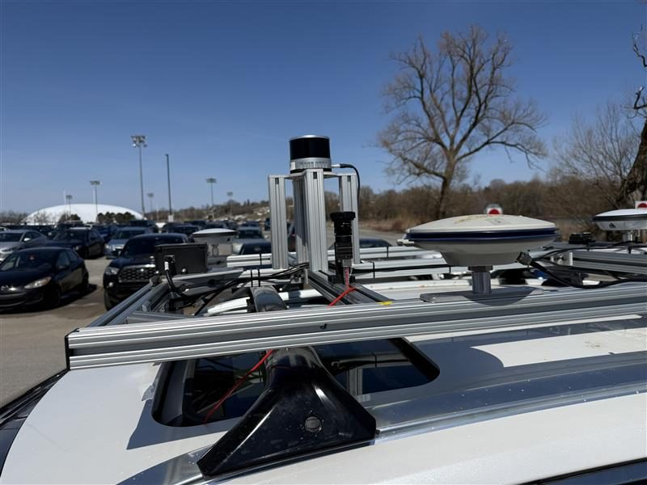

Multi-sensor fusion for GNSS-denied navigation
LOG 01 · NavINST — RMC / Queen'sWhen GPS fails — urban canyons, RF interference — a vehicle still needs to know its heading and attitude. My research fuses unconventional sensing (polarization and event cameras) with inertial navigation to keep the state estimate alive when conventional signals degrade.
I develop the ML side of the pipeline: compute-constrained classifiers (SVM, logistic regression, SGD) for real-time solar meridian detection from polarization imagery — absolute heading with no magnetometer and no GNSS — plus CNN models for visual navigation cues, all fused with the IMU through an EKF and evaluated against survey-grade NovAtel ground truth on a vehicle-mounted rig.
NOW: extending the stack toward closed-loop testing on a Clearpath Husky UGV and autonomous UAV platforms.
- Attitude RMSE
- 0.87° yaw · 0.05° roll/pitch
- Sensors
- Polarization cam · event cam · RGB · Xsens IMU · NovAtel GNSS (reference)
- Methods
- EKF fusion · SVM / LR / SGD · CNN · simulation of degraded-GNSS scenarios
